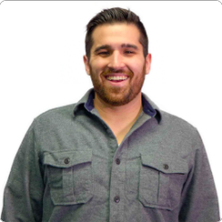

About Me
My name is Thomas Nickel and I am a life long Native of North East Ohio. I have lived in several other states, but my family, and my friends, always bring me back to Cleveland. Every time I see the cold heart of Clevelad, which is Lake Erie, I know that I am home.
While I have grown up by water, I know that my years West Virginia, Virgina, and Colorado have turned me into a mild mountain man. I am always happy the moment I state to see the flat farm land begin to ripple into the first few hills, leading up to the mountians.
Connect with Me